Understanding the probability of default (PD) is crucial for financial institutions because it helps them assess credit risk and determine how much reserve capital to hold against potential losses. This is especially important under accounting standards like CECL, where expected losses must be estimated over the life of a loan. As a result, institutions place significant focus on accurately estimating PD - particularly for single-family homes. Single-family homes are especially important in today's economic climate because they represent a large portion of residential lending portfolios and are closely tied to consumer financial health. In periods of economic uncertainty - such as during interest rate hikes, inflationary pressure, or a cooling housing market - borrowers may struggle to meet mortgage payments, increasing the risk of default. Monitoring PD for these loans helps lenders manage exposure, adjust underwriting standards, and maintain financial stability amid changing market conditions.
The data used for this project was collected from Freddie Mac's Single-Family Loan-Level Dataset via their official API. This dataset provides comprehensive loan-level information on single-family residential mortgages that Freddie Mac has either purchased or guaranteed, covering the years 1999 through 2024. It includes both standard and non-standard loan types and is updated with annual and quarterly files. For the purpose of this analysis, only the standard loan data for the first two quarters of 2024 (Q1 and Q2) was utilized, as data for Q3 and Q4 is not yet publicly available. The dataset is divided into two types: origination data and performance data.
The Origination Data contains loan-level information collected at the time of origination, including attributes such as the loan amount, interest rate, loan-to-value (LTV) ratio, borrower credit score, and property type. This dataset includes a total of 470,030 rows and 32 columns. The Monthly Performance Data provides a monthly snapshot of each loan's performance over time. It tracks variables such as loan status, delinquency levels, prepayments, loan modifications, and foreclosure events. For the same time period, the performance dataset contains 2,456,120 rows and 32 columns. To enhance the performance data with borrower-level characteristics, the origination and performance datasets were merged using loan identifiers. This integration enabled the inclusion of important features such as credit score, which are critical for credit risk analysis and modeling. During the data cleaning process, I removed any rows containing missing or placeholder values, such as credit scores coded as 9999 or other attributes coded as 999. After merging and cleaning, the resulting dataset consisted of 2,455,305 rows, which formed the basis for the analysis.
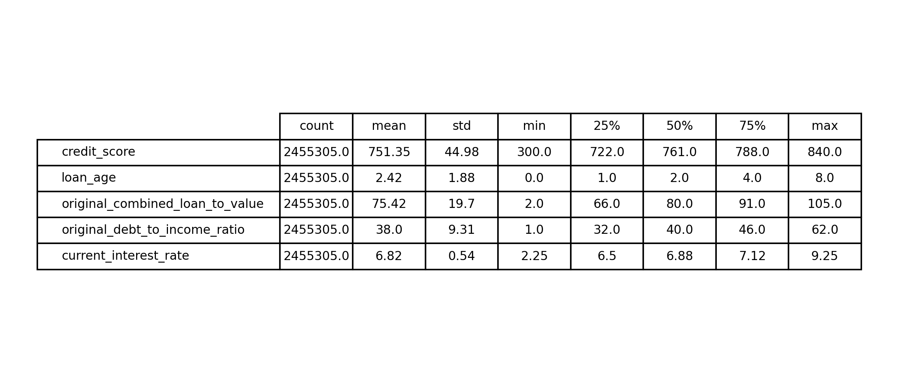
The target variable for this classification problem is loan default, defined as loans that have been delinquent for 90 days or more. This determination is based on the delinquency status column, which categorizes the level of delinquency using the following codes: '1' for 30 days delinquent, '2' for 60 days, '3' for 90 days, '6' for 180 or more days, '7' for foreclosure, and 'RA' for REO (Real Estate Owned) Acquired. REO refers to properties that have completed the foreclosure process but failed to sell at auction, resulting in ownership reverting to the lender, typically a bank or mortgage company. This stage strongly indicates that the borrower has defaulted and the lender has taken possession of the property to mitigate financial loss. For modeling purposes, loans with statuses '3', '6', '7', or 'RA' are classified as defaults, while those with statuses '1', '2', or no delinquency are labeled as non-defaults. The 90-day threshold is a widely accepted industry standard for identifying serious delinquency, as the probability of the borrower recovering and resuming payments diminishes significantly beyond this point. Financial institutions commonly use this benchmark to flag loans at high risk of loss or foreclosure. Since I am working with data from Q1-Q2 of 2024, there isn't enough coverage yet to observe long-term trends. However, even within this short time frame, there are early signs that defaults are on the rise. Additionally, the number of loans delinquent by 30 days or more is also increasing, which is an important early indicator. A rise in 30+ day delinquencies often precedes more serious delinquencies and defaults, signaling potential stress in borrower repayment behavior before it escalates into more severe credit risk.
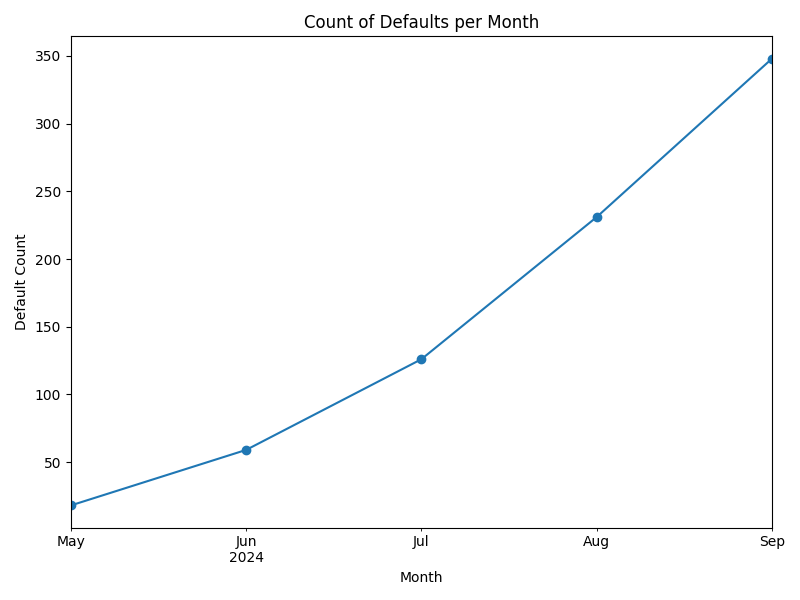
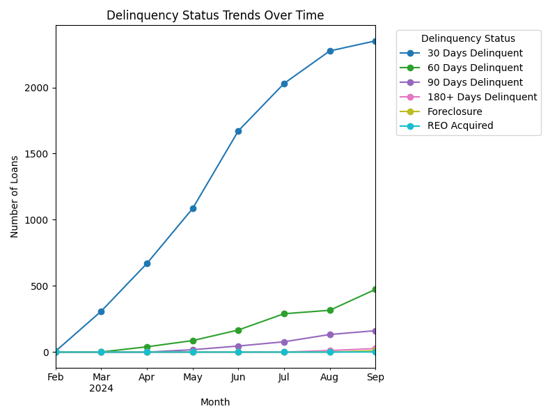
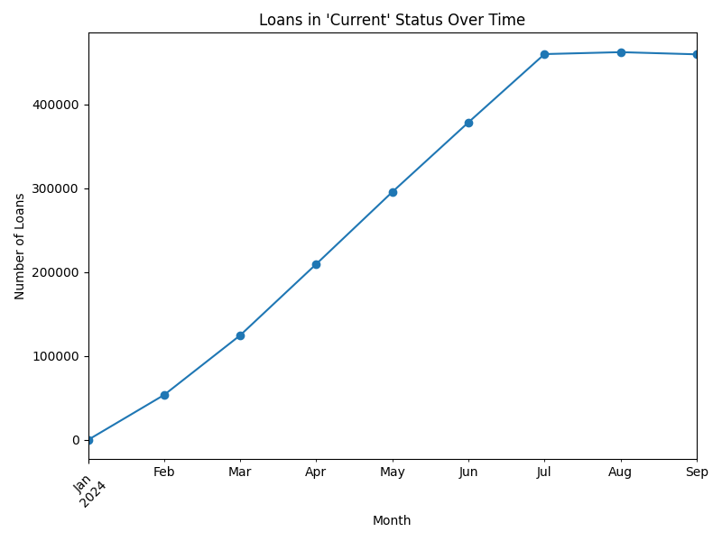
Due to the large number of available features, this project focuses on a subset that is most relevant to credit risk and predictive modeling. These features are selected for their interpretability and relevance to borrower behavior and credit risk. Further feature engineering and modeling will be based on this curated subset.
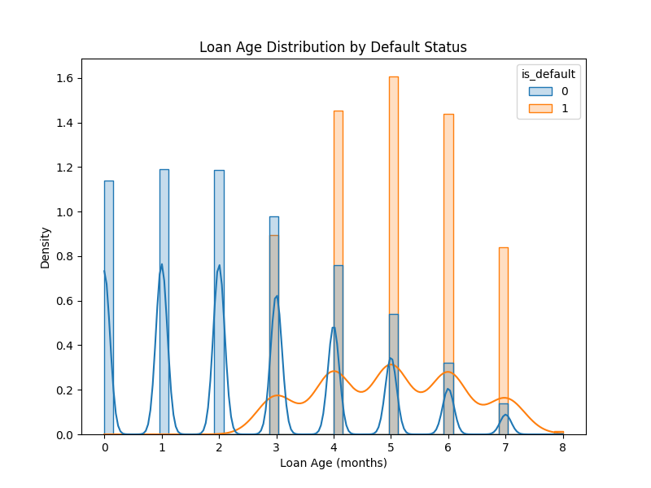
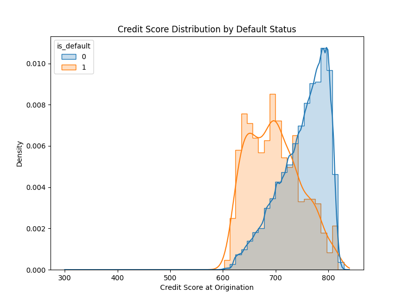
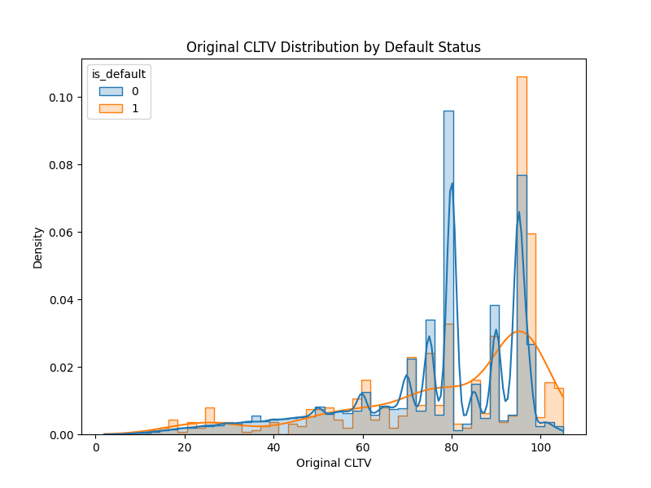
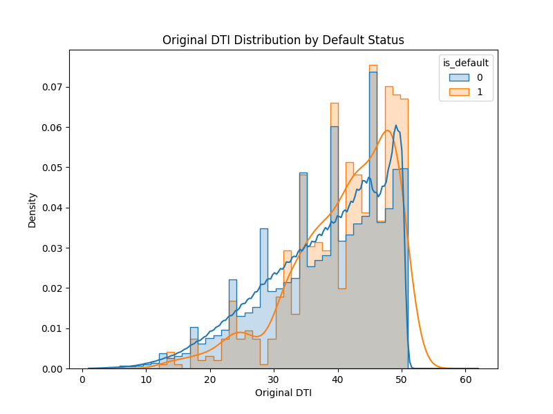
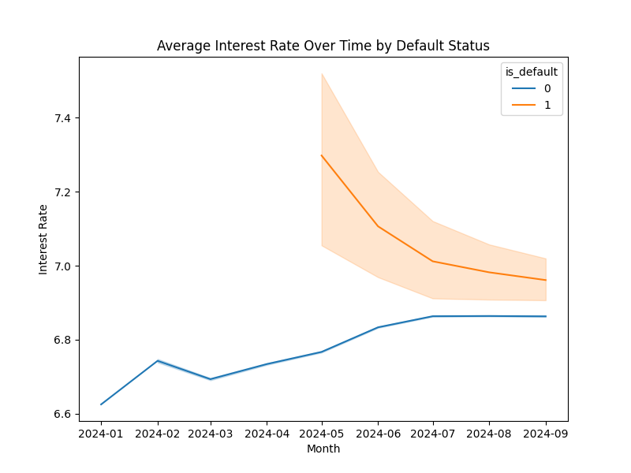
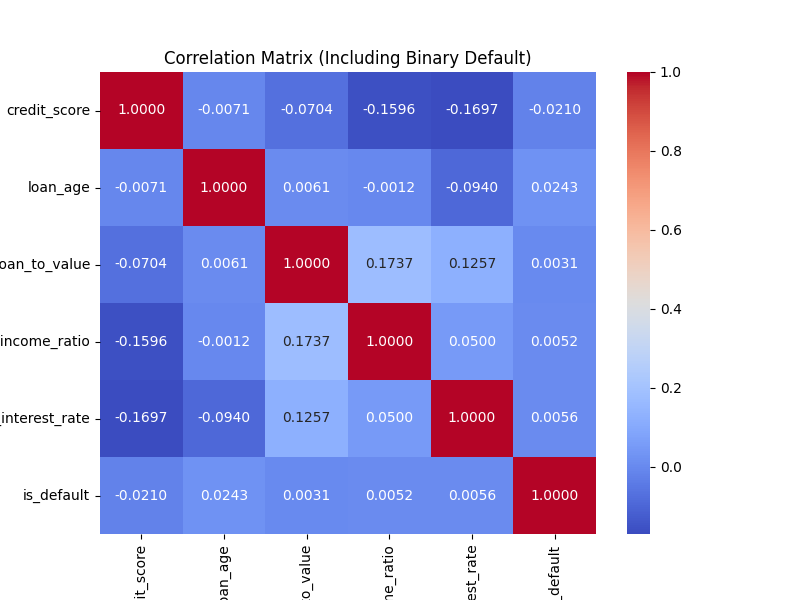
Default rates are generally higher for loans with older ages. The credit score distribution shows a longer left tail for higher credit scores, indicating that borrowers with better credit are less likely to default, while those with lower credit scores have a higher chance of default. Additionally, both original loan-to-value (LTV) and combined loan-to-value (CLTV) ratios show that higher LTVs are associated with increased default risk. The average interest rate for defaulted loans is also higher compared to non-defaulted loans. The correlation analysis indicates that the selected features are not strongly correlated, which is not surprising given the limited data - only from 2024. Identifying clearer trends typically requires a larger sample over time. While incorporating additional features, such as macroeconomic indicators, could improve the analysis, doing so would require further data collection and cleaning. Therefore, for now, I proceed with the current set of selected features.
In this study, I use logistic regression, a suitable method for binary classification problems such as default prediction, where the outcome is either default or non-default. A Bayesian approach is particularly beneficial in this context due to the inherent class imbalance - defaults are relatively rare events. Traditional frequentist logistic regression relies solely on the observed data to estimate parameters, which can lead to unstable or biased results in such imbalanced settings. In contrast, Bayesian logistic regression incorporates prior knowledge or assumptions about the parameters, enabling more robust and reliable inferences. It also provides a full posterior distribution rather than just point estimates. While Bayesian models can be more computationally demanding, especially with large datasets, this study uses a 2024 dataset that, while somewhat large, remains manageable within the Bayesian framework.
The logistic regression model predicts the probability of default \( P(Y = 1 \mid X) \) given a set of predictor variables \( X = (x_1, x_2, ..., x_p) \). The model is formulated as:
\[ P(Y = 1 \mid X) = \frac{1}{1 + \exp\left(-(\beta_0 + \beta_1 x_1 + \beta_2 x_2 + \cdots + \beta_p x_p)\right)} \]
For the regression coefficients, we specify weakly informative prior distributions. These priors allow the data to largely drive the posterior inference while providing some regularization. For each coefficient $\beta_i$, a normal distribution with a mean of 0 and a relatively large variance is used as the prior. Each coefficient \( \beta_j \) is given a prior distribution:
\[ \beta_j \sim \mathcal{N}(0, \sigma^2) \]
The posterior distributions of the model parameters are obtained using Markov Chain Monte Carlo (MCMC) methods. Specifically, the No-U-Turn Sampler (NUTS) algorithm, a variant of Hamiltonian Monte Carlo, is employed for efficient sampling from the posterior distribution. This algorithm automatically tunes the step size and the number of steps taken in each iteration, leading to faster convergence and more reliable inference. The posterior distribution is calculated using Bayes' theorem:
\[ P(\boldsymbol{\beta} \mid D) = \frac{P(D \mid \boldsymbol{\beta}) \cdot P(\boldsymbol{\beta})}{P(D)} \]
Explain look at the results
The trace plot displays four images: the plots on the left show the intercept and coefficients, with the density on the left and the trace plot on the right. The intercept trace plot appears stationary, indicating convergence, while the coefficient trace plots show no drift and demonstrate strong stability in the sampling process. The narrowness of the posterior distributions suggests low uncertainty.
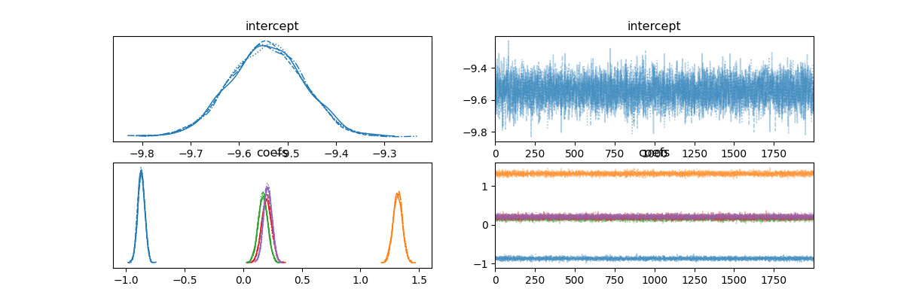
All features show strong convergence and low uncertainty, indicating a well-behaved posterior distribution. The signs of the coefficients align with expectations typically seen in a probability of default model:
The model's ROC-AUC score of 0.913 indicates that it is highly effective at distinguishing between default and non-default cases.
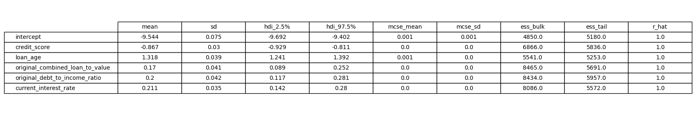
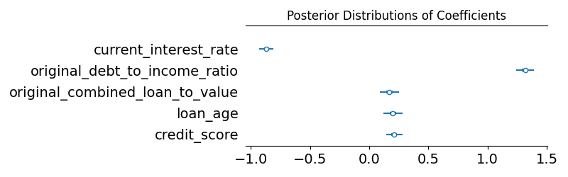
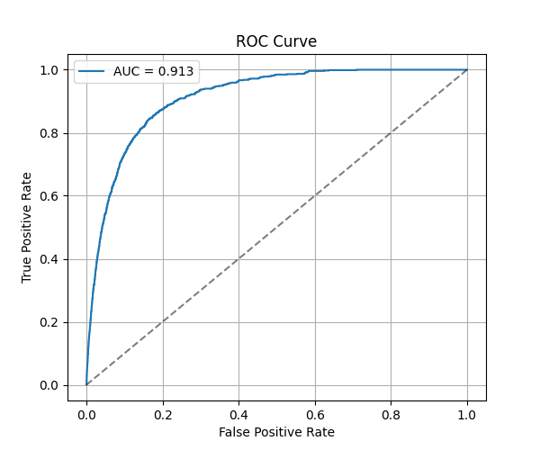
The model achieved a strong ROC-AUC score of 0.913, and the key predictors—such as credit score, interest rate, and loan-to-value ratio—aligned well with economic intuition. However, ROC-AUC can be misleading in imbalanced datasets, as it may still report high performance even if the model fails to capture many actual defaults. A more thorough evaluation should include precision-recall analysis, threshold tuning, and assessment of Type I and Type II errors. Additionally, the analysis is limited by the short observation window (Q1–Q2 2024), absence of macroeconomic variables, and potential data censoring from incomplete performance histories. Future improvements could include using train-validation-test splits, more extensive hyperparameter tuning, and exploring scalable Bayesian methods for larger datasets.
The codebase for this project is available at https://github.com/LupaLupa10/freddie-mac.git.